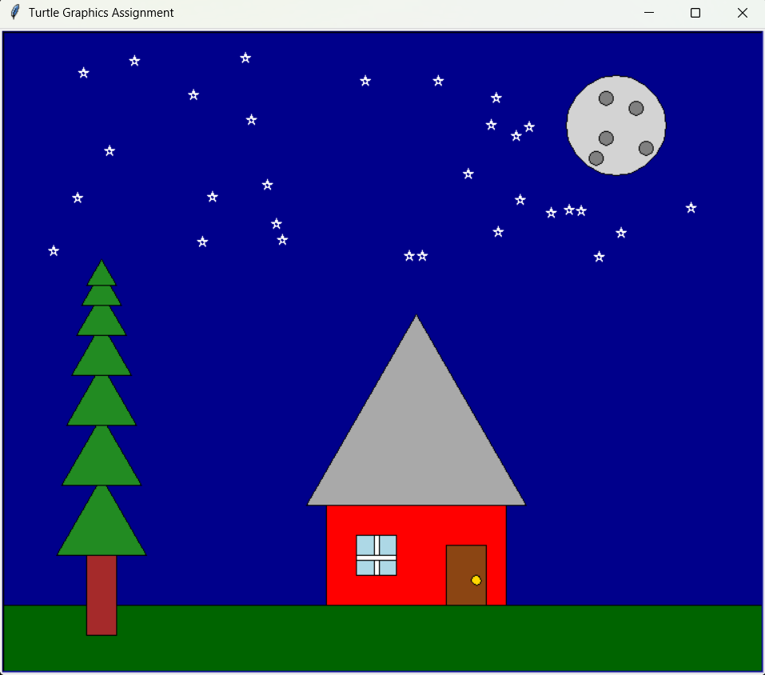

This page shows the original Project 2 turtle graphics scene: a nighttime landscape
with a house, a moon, stars, a tree, and grassy ground. The implementation uses
helper functions for basic shapes and a single draw_scene function that
arranges them.

You can download the script to run it yourself.
The code uses helper functions for basic shapes and a single draw_scene
function to assemble the components.